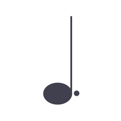
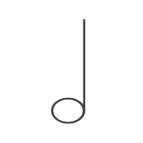
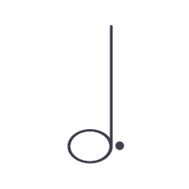
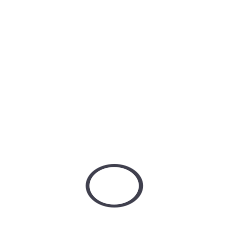

BPMを入力すると対応する音符の秒数を出力します。暫定的要素を含みます。Web公開用に少し調整しました。現在、4分の4小節のみに対応しております。
※BPM150からの変更率：
| Beat | Time | Time at BPM150 | |
 |
0.125拍 | N秒 | 厳密に 0.05秒 |
| 0.25拍 | N秒 | 厳密に 0.1秒 | |
| 0.375拍 | N秒 | 厳密に 0.15秒 | |
| 0.5拍 | N秒 | 厳密に 0.2秒 | |
| 0.75拍 | N秒 | 厳密に 0.3秒 | |
| 1拍 | N秒 | 厳密に 0.4秒 | |
 |
1.5拍 | N秒 | 厳密に 0.6秒 |
 |
2拍 | N秒 | 厳密に 0.8秒 |
 |
3拍 | N秒 | |
 |
4拍=1小節 | N秒 | |
| 2小節 | N秒 | ||
| 3小節 | N秒 | ||
| 4小節 | N秒 | ||
| 8小節 | N秒 | ||
| N拍 | N秒 | ||
| N小節 | N秒 | ||